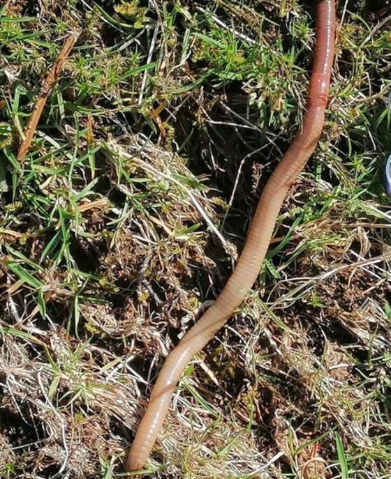
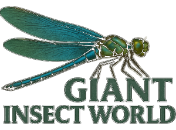
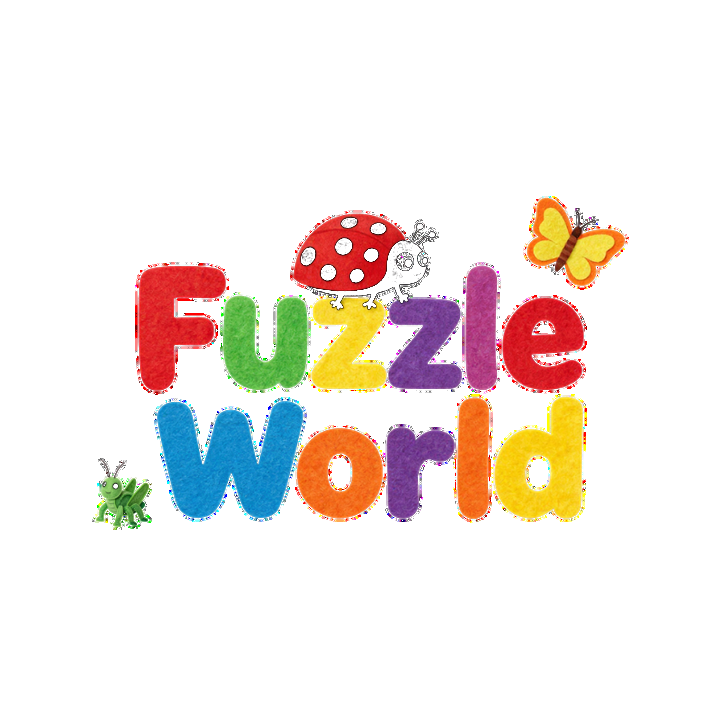

A Giant Insect World puzzle
build it · take it apart · build it again
You will need:
Find these colours in felt or paper
Reddish brown · Pale orange
Using the template, cut out:
That's 3 shapes in total!
The simplest kit in the set — a great first puzzle.
Your earthworm is about 12 × 4 cm.
Take it apart and build it again!
Wiggle it into any shape you like — worms are bendy!
Collect the set:
Underground: woodlouse, earthworm, ant

